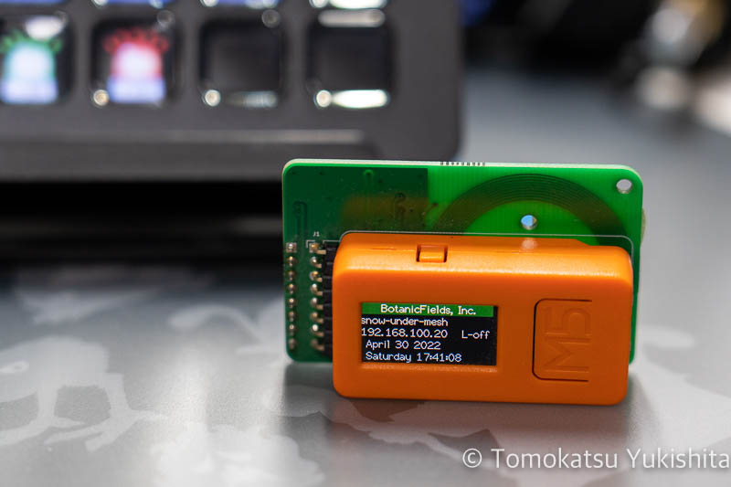
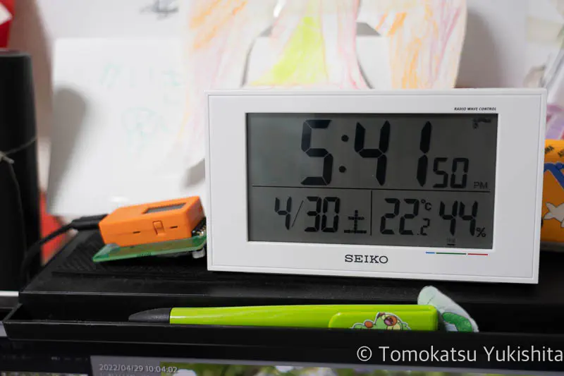

DIY JJY Simulator with M5StickC: Syncing My Radio-Controlled Clock

After moving to a new home where my radio-controlled clock could no longer receive the JJY time signal, I built a JJY simulator using an M5StickC and a JJY antenna board. This is a record of how I solved the problem for well under JPY 5,000.
The Problem: Radio-Controlled Clock Stopped Syncing After Moving
Radio-controlled clocks are convenient precisely because they set themselves automatically. After moving, however, my clock stopped receiving the JJY signal indoors, and the displayed time slowly drifted out of sync.
The clock could still pick up the signal near a window, but carrying it there and back every time it needed syncing was not a practical long-term solution.
What Is JJY?
JJY is the call sign for Japan’s standard time radio signal, broadcast by the National Institute of Information and Communications Technology (NICT). Two transmitters cover the country: 40 kHz from Fukushima (Ōtakadoya-yama) and 60 kHz from Saga (Haganeyama). Radio-controlled clocks receive this signal to maintain accurate time automatically.
The device described in this article simulates the JJY signal and rebroadcasts it locally, allowing a clock to sync even when it cannot receive the real transmission.
Commercial Retransmitters Are Expensive
There are commercial products designed to solve exactly this problem — they receive accurate time from NTP servers or GPS and retransmit a JJY-compatible signal indoors.
These products work well, but they typically cost JPY 10,000–30,000. Hard to justify for a single clock at home.
The DIY Solution: ATOM Lite + JJY Antenna Board
Searching Switch Science (a Japanese electronics parts retailer), I found a JJY antenna board designed to work with M5Stack devices — exactly what I needed.
Required Parts
| Product | Link | Notes |
|---|---|---|
| JJY antenna board for M5StickC | Switch Science | M5StickC specific |
| JJY antenna board for M5Atom | Switch Science | For ATOM Lite/Matrix |
| M5StickC | Switch Science | Discontinued |
| ATOM Lite | Switch Science | Available now — recommended |
| ATOM Matrix | Switch Science | Available now |
Note: M5StickC has been discontinued. For new builds, the recommended combination is ATOM Lite with the JJY antenna board for M5Atom. The original article used M5StickC, which is what appears in the photos below.
At the time of purchase, the antenna board and M5 device together came to under JPY 5,000 (prices may vary — check current listings before ordering). That is roughly one-third to one-sixth the cost of a commercial retransmitter.
Setup
Setup follows the instructions in the GitHub repository linked from the Switch Science product page:
- Project page — GitHub: BF-018A
- JJY simulator sketch (.ino)
- Qiita article: Generating a JJY-like signal with M5StickC / M5Atom using Ticker
Flash the firmware following the instructions and there are no unusual steps. It worked on the first attempt without any issues.
Testing
With the firmware flashed, connect the M5 device to the JJY antenna board and place it next to the radio-controlled clock.

The transmitted signal is weak and short-range. The device needs to be within a few centimeters to a few tens of centimeters of the clock to sync reliably. In practice this is not a problem — once the clock has synced, it holds accurate time on its own until the next sync cycle.
Known Limitation
With the firmware I used at the time, the Wi-Fi connection sometimes dropped near a microwave oven and did not reconnect automatically. A manual restart is required. Either keep the device away from the microwave, or add a periodic auto-reset to the firmware.
Summary
| Item | Detail |
|---|---|
| Total parts cost | Under JPY 5,000 (roughly 1/3–1/6 of commercial alternatives) |
| Soldering required | None |
| Setup difficulty | Low — flash firmware from GitHub and place next to clock |
| Signal range | Short (a few cm to a few tens of cm) |
| Known issue | Wi-Fi drops near microwave, requires manual restart |
In my setup, the clock could sync as long as I placed the antenna close beside it.